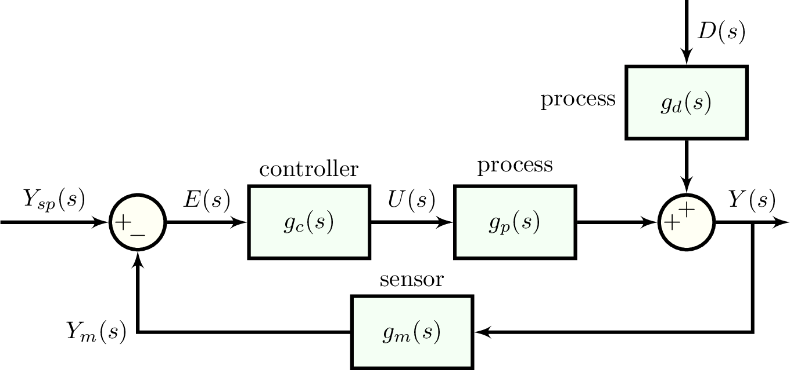

transfer functions
the response [output $Y(s)$] of a linear, time-invariant system to any input [$U(s)$] is characterized by a transfer function $g(s)=Y(s)/U(s)$.
constructing a transfer function
we use a data structure, TransferFunction, to represent a transfer function. for example, consider the transfer function $g(s)=\dfrac{5s+1}{s^2 + 4s+5}$.
we can construct $g(s)$ in an intuitive way that resembles the algebraic expression:
g = (5 * s + 1) / (s ^ 2 + 4 * s + 5) # way 1alternatively, we can construct a TransferFunction using the coefficients associated with the powers of $s$ in the polynomials composing the numerator and denominator, respectively, of $g(s)$. The coefficients of the highest powers of $s$ go first.
g = TransferFunction([5, 1], [1, 4, 5]) # way 2note that, under the hood, we defined s such that s == TransferFunction([1, 0], [1]).
as rational functions associated with a time delay, each TransferFunction data structure has a numerator (a polynomial in :s), denominator (a polynomial in :s), and time_delay (a real number) attribute. access these attributes as follows:
g.numerator # 5s + 1, a `Poly`
g.denominator # s² + 4s + 5, a `Poly`
g.time_delay # 0.0, a `Float64`g.numerator and g.denominator are Poly types from the package Polynomials.jl.
time delays
to construct a transfer function with a time delay, such as: $g(s)=\dfrac{3}{2s+1}e^{-2s}$
θ = 2.0 # time delay
g = 3 / (2 * s + 1) * exp(-θ * s) # way 1
g = TransferFunction([3], [2, 1], θ) # way 2zeros, poles, k-factor representation
we can write any transfer function $g(s)$ in terms of its poles ($p_j$), zeros ($z_j$), k-factor ($k$), and time delay ($\theta$):
\[g(s)=k\dfrac{\Pi_j (s-z_j)}{\Pi_j(s-p_j)}e^{-\theta s}\]
the scalar factor $k$ allows us to uniquely specify a transfer function in terms of its poles, zeros, and time delay. note that the $k$-factor is not equal to the zero-frequency gain.
for example:
\[g(s)=\dfrac{5s+1}{s^2 + 4s+5}=5\dfrac{(s+1/5)}{(s+2+i)(s+2-i)}\]
construting a transfer function from its zeros, poles and k-factor
g = zeros_poles_k([-1/5], [-2 + im, -2 - im], 5.0, time_delay=0.0) # way 3the im is the imaginary number $i$. see the Julia docs on complex numbers.
computing the poles, zeros, and k-factor of a transfer function
g = (5 * s + 1) / (s ^ 2 + 4 * s + 5)
zeros_poles_k(g) # [-0.2], [-2-im, -2+im], 5transfer function algebra
we can add +, subject -, multiply *, and divide / transfer functions.
g₁ = 3 / (s + 2)
g₂ = 1 / (s + 4)
g_product = g₁ * g₂ # 3 / (s^2 + 6s + 8)
g_sum = g₁ + g₂ # (4s + 14) / (s^2 + 6s + 8)evaluate a transfer function at a complex number
for example, to evaluate $g(s)=\dfrac{4}{s+2}$ at $s=1-i$:
g = 4 / (s + 2)
evaluate(g, 2 * im) # 1 - imzero-frequency gain of a transfer function
compute the zero-frequency gain of a transfer function $g(s)$, which is $g(s)$ evaluated at $s=0$, as follows:
g = (5 * s + 1) / (s ^ 2 + 4 * s + 5)
zero_frequency_gain(g) # 0.2the zero-frequency gain is the ratio of the steady state output value to the steady state input value (e.g., consider a step input). note that the zero-frequency gain could be infinite or zero, which is why we do not have a function to construct a transfer function from its zeros, poles, and zero-frequency gain.
poles, zeros, and zero-frequency gain of a transfer function
compute the poles, zeros, and zero-frequency gain of a transfer function all at once as follows:
g = (5 * s + 5) / (s ^ 2 + 4 * s + 5)
z, p, gain = zeros_poles_gain(g)
# z = [-1.0]
# p = [-2-im, -2+im]
# gain = 1.0cancel poles and zeros
cancel pairs of identical poles and zeros in a transfer function as follows:
pole_zero_cancellation(s * (s+1) / ((s+3) * s * (s+1) ^ 2)) # 1 / ((s+3) * (s+1))note that this cancellation is done automatically when multiplying, dividing, adding, and subtracting transfer functions.
under the hood, we compare all pairs of poles and zeros to look for identical pairs via isapprox. after removing identical pole-zero pairs, we reconstruct the transfer function from the remaining poles, zeros, and k-factor. we ensure that the coefficients in the resulting rational function are real.
the order of a transfer function
we can find the order of the polynomials in the numerator and denominator of the rational function comprising the transfer function:
g = (s + 1) / ((s + 2) * (s + 3))
system_order(g) # (1, 2)note that is only the apparent order; you may need to call pole_zero_cancellation to get the effective order:
g = (s + 1) / ((s + 2) * (s + 3) * (s + 1))
system_order(g) # (1, 3)
g = pole_zero_cancellation(g)
system_order(g) # (0, 2)frequency response of an open-loop transfer function

compute the critical frequency, gain crossover frequency, gain margin, and phase margin of a closed loop control system with open-loop transfer function g_ol with gain_phase_margins. for example, consider:
\[g_{ol}(s)=\dfrac{2e^{-s}}{5s+1}\]
g_ol = 2 * exp(-s) / (5 * s + 1)
margins = gain_phase_margins(g_ol)
margins.ω_c # critical freq. (radians / time)
margins.ω_g # gain crossover freq. (radians / time)
margins.gain_margin # gain margin
margins.phase_margin # phase margin (radians)special transfer functions
(0, 1) order transfer functions
\[g(s)=\frac{K}{\tau s +1}\]
easily construct:
K = 2.0
τ = 3.0
g = first_order_system(K, τ) # 2 / (3 * s + 1)compute time constant:
time_constant(10 / (6 * s + 2)) # 3(0, 2) order transfer functions
\[g(s)=\frac{K}{\tau^2 s^2 + 2\tau \xi s +1}\]
easily construct:
K = 1.0
τ = 2.0
ξ = 0.1
g = second_order_system(K, τ, ξ) # 1 / (4 * s^2 + 0.4 * s + 1)compute time constant, damping coefficient:
g = 1.0 / (8 * s^2 + 0.8 * s + 2)
τ = time_constant(g) # 2.0
ξ = damping_coefficient(g) # 0.1closed-loop transfer functions
to represent a closed-loop transfer function, we use a special transfer function type, ClosedLoopTransferFunction. this is only necessary when time delays are involved, but it works for when time delays are not involved as well.

using block diagram algebra, we find the closed-loop transfer functions that relate changes in the output $y$ to changes in the set point $y_{sp}$ and to changes in the disturbance $d$:
\[g_r(s)=\dfrac{Y(s)}{D(s)}=\dfrac{g_d(s)}{1+g_c(s)g_u(s)g_m(s)}\]
\[g_s(s)=\dfrac{Y(s)}{Y_{sp}(s)}=\dfrac{g_c(s)g_u(s)g_m(s)}{1+g_c(s)g_u(s)g_m(s)}\]
we construct these two closed-loop transfer functions as gr and gs as follows.
# PI controller transfer function
pic = PIController(1.0, 2.0)
gc = TransferFunction(pic)
# process, sensor dynamics
gu = 2 / (4 * s + 1) * exp(-0.5 * s)
gm = 1 / (s + 1) * exp(-0.1 * s)
gd = 6 / (6 * s + 1)
# open-loop transfer function
g_ol = gc * gu * gm
# closed-loop transfer function for regulator response
gr = ClosedLoopTransferFunction(gd, g_ol)
# closed-loop transfer function for servo response
gs = ClosedLoopTransferFunction(g_ol, g_ol)detailed docs
Controlz.TransferFunction — Typetf = TransferFunction([1, 2], [3, 5, 8])
tf = TransferFunction([1, 2], [3, 5, 8], 3.0)Construct a transfer function representing a linear, time-invariant system.
Example
to construct the transfer function
\[G(s) = \frac{4e^{-2.2s}}{2s+1}\]
in Julia:
tf = TransferFunction([4], [2, 1], 2.2)Attributes
numerator::Poly: the polynomial in the numerator of the transfer functiondenominator::Poly: the polynomial in the denominator of the transfer functiontime_delay::Float64: the associated time delay
Controlz.ClosedLoopTransferFunction — Typea closed-loop transfer function that relates an output Y and an input U in a feedback loop.
the resulting closed-loop transfer function is:
Y top
--- = --------
U 1 + g_olexample
g_ol = 4 / (s + 1) * 2 / (s + 2)
top = 5 / (s + 4)
g = ClosedLoopTransferFunction(top, g_ol)Arguments
top::TransferFunction: numeratorg_ol::TransferFunction: open-loop transfer function
Controlz.zero_frequency_gain — FunctionK = zero_frequency_gain(tf)compute the (signed) zero frequency gain of a transfer function $g(s)$, which is:
\[K := \lim_{s\rightarrow 0} G(s)\]
the zero-frequency gain "represents the ratio of the steady state value of the output with respect to a step input" source
example
g = 5 / (3 * s + 1)
K = zero_frequency_gain(g) # K = 5.0arguments
tf::TransferFunction: the transfer function
returns
K::Float64: the zero-frequency gain of the transfer function
Controlz.zeros_poles_gain — Functionz, p, gain = zeros_poles_gain(tf)Compute the zeros, poles, and zero-frequency gain of a transfer function.
- the zeros are the zeros of the numerator of the transfer function.
- the poles are the zeros of the denominator of the transfer function.
- the zero-frequency gain is the transfer function evaluated at $s=0$
Controlz.zeros_poles_k — Function# compute the zeros, poles, and k-factor of a transfer function
z, p, k = zeros_poles_k(tf)
# construct a transfer function from its zeros, poles, and k-factor
tf = zeros_poles_k(z, p, k, time_delay=0.0)the representation of a transfer function in this context is:
\[g(s)=k\dfrac{\Pi_j (s-z_j)}{\Pi_j (s-p_j)}\]
where $z_j$ is zero $j$, $p_j$ is pole $j$, and $k$ is a constant factor (not equal to the zero-frequency gain) that uniquely specifies the transfer function.
- the zeros are the zeros of the numerator of the transfer function.
- the poles are the zeros of the denominator of the transfer function.
Controlz.pole_zero_cancellation — Functiontf = pole_zero_cancellation(tf, verbose=false)find pairs of identical poles and zeros and return a new transfer function with the appropriate poles and zeros cancelled. this is achieved by comparing the poles and zeros with isapprox and canceling if e.g., a pole is equal to a zero.
Arguments
tf::TransferFunction: the transfer functionverbose::Bool=false: print off which poles, zeros are cancelled.
Example
pole_zero_cancellation(s * (s - 1) / (s * (s + 1))) # (s-1)/(s+1)Controlz.evaluate — Functionevaluate(tf, z)Evaluate a TransferFunction, tf, at a particular number z.
Examples
tf = TransferFunction([1], [3, 1])
evaluate(tf, 1.0) # 0.25
evaluate(tf, 2.0 + 3.0im) # also takes imaginary numbers as inputControlz.proper — Functionproper(tf)Return true if transfer function tf is proper and false otherwise.
Controlz.strictly_proper — Functionstrictly_proper(tf)Return true if transfer function tf is strictly proper and false otherwise.
Controlz.characteristic_polynomial — Functionp = characteristic_polynomial(g_ol)Determine the characteristic polynomial associated with open loop transfer function g_ol.
The characteristic polynomial is $1+g_{ol}(s)$. The roots of the characteristic polynomial determine the character of the response of the closed loop system to bounded inputs.
Arguments
g_ol::TransferFunction: open loop transfer function
Returns
a polynomial of type Poly
Example
g_ol = 4 / (s + 3) / (s + 2) / (s + 1)
characteristic_polynomial(g_ol) # s³ + 6s² + 11s + 10, a `Poly`Controlz.zpk_form — Functiontf = zpk_form(tf)write transfer function tf in zeros, poles, k-factor form:
\[g(s)=k\dfrac{\Pi_j (s-z_j)}{\Pi_j (s-p_j)}\]
where $z_j$ is zero $j$, $p_j$ is pole $j$, and $k$ is a constant factor (not equal to the zero-frequency gain) that uniquely specifies the transfer function.
this is achieved by multiplying by 1.0 in a fancy way such that the highest power of $s$ in the denominator is associated with a coefficient of $1$.
Example
g = 8.0 / (2 * s^2 + 3 * s + 4)
g_zpk = zpk_form(g) # 4 / (s^2 + 1.5 s + 2)Controlz.system_order — Functiono = system_order(tf::TransferFunction)return the order of the numerator and denominator of the transfer function tf.
use pole_zero_cancellation first if you wish to cancel poles and zeros that are equal before determining the order.
returns
o::Tuple{Int, Int}: (order of numerator, order of denominator)
examples
g = 1 / (s + 1)
system_order(g) # (0, 1)
g = (s + 1) / ((s + 2) * (s + 3))
system_order(g) # (1, 2)where pole_zero_cancellation is necessary: ``julia g = (s + 1) / (s + 1) ^ 2 system_order(g) # (1, 2)
g = polezerocancellation(g) # 1 / (s + 1) system_order(g) # (0, 1) ```
Controlz.first_order_system — Functiong = first_order_system(K, τ)construct a first-order transfer function with gain K and time constant τ:
\[g(s)=\frac{K}{\tau s+1}\]
example
K = 1.0
τ = 3.0
g = first_order_system(K, τ) # 1 / (3 * s + 1)returns
g::TransferFunction: the first order transfer function. well, (0, 1) order.
Controlz.second_order_system — Functiong = second_order_system(K, τ, ξ)construct a second-order transfer function with gain K, time constant τ, and damping coefficient ξ:
\[g(s)=\frac{K}{\tau^2 s^2 + 2\tau \xi s +1}\]
example
K = 1.0
τ = 2.0
ξ = 0.1
g = second_order_system(K, τ, ξ) # 1 / (4 * s^2 + 0.4 * s + 1)returns
g::TransferFunction: the second order transfer function. well, (0, 2) order.
Controlz.time_constant — Functionτ = time_constant(g)compute the time constant τ of an order (0, 1) or order (0, 2) transfer function.
order (0, 1) representation:
\[g(s)=\frac{K}{\tau s+1}\]
order (0, 2) representation:
\[g(s)=\frac{K}{\tau^2 s^2 + 2\tau \xi s +1}\]
returns
τ::Float64: the time constant.
examples
g = 4 / (6 * s + 2)
time_constant(g) # 3.0
g = 1.0 / (8 * s^2 + 0.8 * s + 2)
time_constant(g) # 2.0Controlz.damping_coefficient — Functionξ = damping_coefficient(g)compute the damping coefficient ξ of an order (0, 2) transfer function.
order (0, 2) representation:
\[g(s)=\frac{K}{\tau^2 s^2 + 2\tau \xi s +1}\]
returns
ξ::Float64: the damping coefficient
examples
g = 1.0 / (8 * s^2 + 0.8 * s + 2)
damping_coefficient(g) # 0.1Controlz.gain_phase_margins — Functionmargins = gain_phase_margins(g_ol, ω_c_guess=0.001, ω_g_guess=0.001)compute critical frequency (radians / time), gain crossover frequency (radians / time), gain margin, and phase margin (radians) of a closed loop, given its closed loop transfer function g_ol::TransferFunction.
if ωc or ωg is not found (i.e. if either are NaN), but the bode_plot clearly shows a critical/gain crossover frequency, adjust ω_c_guess or ω_g_guess to find the root.
Example
g_ol = 2 * exp(-s) / (5 * s + 1)
margins = gain_phase_margins(g_ol)
margins.ω_c # critical freq. (radians / time)
margins.ω_g # gain crossover freq. (radians / time)
margins.gain_margin # gain margin
margins.phase_margin # phase margin (radians)